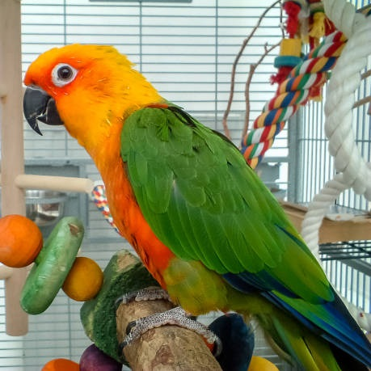

Detail search
Detail search
 My profile
My profile
|
|---|
| Inbox |
| Notifications |
| My reviews |
| Saved ads |
| Settings |
| Log out |
| Henry Smith Monica Brooklyn 7 days 55 |
Looking for someone to care for my friendly dog, Monica, while I’m away on vacation. Monica is 4 years old and loves going on daily walks in the park. She’s playful, enjoys fetching tennis balls, and is great with other pets and children. Monica’s diet consists of high-quality dry food (provided), and she enjoys occasional treats like carrots or apples. She requires feeding twice a... day—morning and evening—and fresh water available at all times. Monica is well-behaved but prefers a structured routine, so morning walks are her favorite! If you’re someone who loves dogs and can dedicate some time for cuddles and play, Monica will be in great paws with you. |
|

|
Olivia Johnson Audrey Queens 3 days 30 |
Looking for someone to care for my friendly dog, Monica, while I’m away on vacation. Monica is 4 years old and loves going on daily walks in the park. She’s playful, enjoys fetching tennis balls, and is great with other pets and children. Monica’s diet consists of high-quality dry food (provided), and she enjoys occasional treats like carrots or apples. She requires feeding twice a... day—morning and evening—and fresh water available at all times. Monica is well-behaved but prefers a structured routine, so morning walks are her favorite! If you’re someone who loves dogs and can dedicate some time for cuddles and play, Monica will be in great paws with you. |
|  | James Brown Jenna Manhattan 10 days 180 |
Looking for someone to care for my friendly dog, Monica, while I’m away on vacation. Monica is 4 years old and loves going on daily walks in the park. She’s playful, enjoys fetching tennis balls, and is great with other pets and children. Monica’s diet consists of high-quality dry food (provided), and she enjoys occasional treats like carrots or apples. She requires feeding twice a... day—morning and evening—and fresh water available at all times. Monica is well-behaved but prefers a structured routine, so morning walks are her favorite! If you’re someone who loves dogs and can dedicate some time for cuddles and play, Monica will be in great paws with you. |
| Maria Martinez Sydney Harlem 9 days 160 |
Looking for someone to care for my friendly dog, Monica, while I’m away on vacation. Monica is 4 years old and loves going on daily walks in the park. She’s playful, enjoys fetching tennis balls, and is great with other pets and children. Monica’s diet consists of high-quality dry food (provided), and she enjoys occasional treats like carrots or apples. She requires feeding twice a... day—morning and evening—and fresh water available at all times. Monica is well-behaved but prefers a structured routine, so morning walks are her favorite! If you’re someone who loves dogs and can dedicate some time for cuddles and play, Monica will be in great paws with you. |